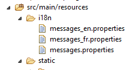
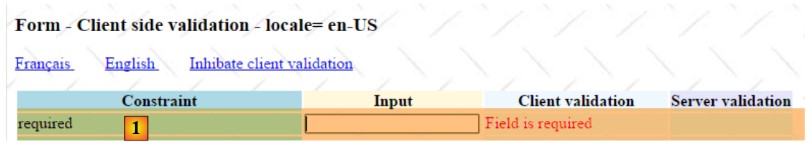
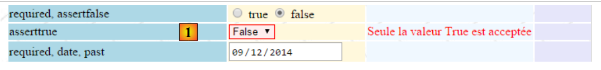
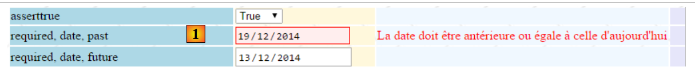
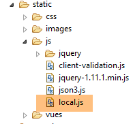

6. Client-side validation for Javascript
In the previous chapter, we looked at server-side validation. Let’s return to the architecture of a Spring application MVC:
 |
BD
So far, the pages sent to the client did not contain Javascript. We will now discuss this technology, which will initially allow us to perform client-side validations. The principle is as follows:
- it is the Javascript that posts the values to the web server;
- and therefore, before this POST, it can verify the validity of the data and prevent the POST if the data is invalid;
We will use the form that we validated on the server side. We will now offer the option to validate it both on the client side and on the server side.
Note: This is a complex topic. Readers not interested in this subject may skip directly to paragraph 7.
6.1. Project Features
We present a few views of the project to showcase its features. The initial page is generated using the URL [http://localhost:8080/js01.html]
 |
Validations have been implemented on both sides: client and server. Since POST only occurs if the values have been deemed valid on the client side, server-side validations always succeed. We have therefore provided a link to disable client-side validations. When in this mode, the behavior returns to the mode we have already studied. Here is an example:
123  |
- in [1], the entered values;
- in [2], the error messages related to the entries;
- in [3], a summary of the errors, with the following for each:
- the name of the validated field,
- the error code,
- the default message for that error code;
Now, let’s enable client-side validation:
 |
- in [1], the entered values. Note that incorrect entries have a specific style;
- in [2], the error messages associated with the incorrect entries. They are identical to those generated by the server;
- In [3-4], there is nothing left because as long as there are incorrect entries, the POST request to the server does not occur;
6.2. Server-side validation
6.2.1. Configuration
We start by creating a new Maven project [springmvc-validation-client]:
 |
We develop the project as follows:
 |
The [Config] class configures the project. It is identical to what it was in the previous projects:
package istia.st.springmvc.config;
import java.util.Locale;
import org.springframework.boot.autoconfigure.EnableAutoConfiguration;
import org.springframework.context.MessageSource;
import org.springframework.context.annotation.Bean;
import org.springframework.context.annotation.ComponentScan;
import org.springframework.context.annotation.Configuration;
import org.springframework.context.support.ResourceBundleMessageSource;
import org.springframework.web.servlet.config.annotation.InterceptorRegistry;
import org.springframework.web.servlet.config.annotation.WebMvcConfigurerAdapter;
import org.springframework.web.servlet.i18n.CookieLocaleResolver;
import org.springframework.web.servlet.i18n.LocaleChangeInterceptor;
import org.thymeleaf.spring4.SpringTemplateEngine;
import org.thymeleaf.spring4.templateresolver.SpringResourceTemplateResolver;
@Configuration
@ComponentScan({ "istia.st.springmvc.controllers", "istia.st.springmvc.models" })
@EnableAutoConfiguration
public class Config extends WebMvcConfigurerAdapter {
@Bean
public MessageSource messageSource() {
ResourceBundleMessageSource messageSource = new ResourceBundleMessageSource();
messageSource.setBasename("i18n/messages");
return messageSource;
}
@Bean
public LocaleChangeInterceptor localeChangeInterceptor() {
LocaleChangeInterceptor localeChangeInterceptor = new LocaleChangeInterceptor();
localeChangeInterceptor.setParamName("lang");
return localeChangeInterceptor;
}
@Override
public void addInterceptors(InterceptorRegistry registry) {
registry.addInterceptor(localeChangeInterceptor());
}
@Bean
public CookieLocaleResolver localeResolver() {
CookieLocaleResolver localeResolver = new CookieLocaleResolver();
localeResolver.setCookieName("lang");
localeResolver.setDefaultLocale(new Locale("fr"));
return localeResolver;
}
@Bean
public SpringResourceTemplateResolver templateResolver() {
SpringResourceTemplateResolver templateResolver = new SpringResourceTemplateResolver();
templateResolver.setPrefix("classpath:/templates/");
templateResolver.setSuffix(".xml");
templateResolver.setTemplateMode("HTML5");
templateResolver.setCacheable(true);
templateResolver.setCharacterEncoding("UTF-8");
return templateResolver;
}
@Bean
SpringTemplateEngine templateEngine(SpringResourceTemplateResolver templateResolver) {
SpringTemplateEngine templateEngine = new SpringTemplateEngine();
templateEngine.setTemplateResolver(templateResolver);
return templateEngine;
}
}
The [Main] class is the project's executable class:
package istia.st.springmvc.main;
import istia.st.springmvc.config.Config;
import java.util.Arrays;
import org.springframework.boot.SpringApplication;
import org.springframework.context.ApplicationContext;
public class Main {
public static void main(String[] args) {
// launch the application
ApplicationContext context = SpringApplication.run(Config.class, args);
// displays the list of beans found by Spring
System.out.println("Liste des beans Spring");
String[] beanNames = context.getBeanDefinitionNames();
Arrays.sort(beanNames);
for (String beanName : beanNames) {
System.out.println(beanName);
}
}
}
- Line 13: Spring Boot is launched with the configuration file [Config];
- lines 15–20: for this example, we show how to display the list of objects managed by Spring. This can be useful if you sometimes feel that Spring is not managing one of your components. It is a way to verify this. It is also a way to verify the autoconfiguration performed by Spring Boot. On the console, you will see a list similar to the following:
We have highlighted the objects defined in the [Config] class.
6.2.2. The form template
Let’s continue exploring the project:
 |
The [Form01] class is the class that will receive the posted values. It is as follows:
package istia.st.springmvc.models;
import java.util.Date;
import javax.validation.constraints.AssertFalse;
import javax.validation.constraints.AssertTrue;
import javax.validation.constraints.DecimalMax;
import javax.validation.constraints.DecimalMin;
import javax.validation.constraints.Future;
import javax.validation.constraints.Max;
import javax.validation.constraints.Min;
import javax.validation.constraints.NotNull;
import javax.validation.constraints.Past;
import javax.validation.constraints.Pattern;
import javax.validation.constraints.Size;
import org.hibernate.validator.constraints.Email;
import org.hibernate.validator.constraints.Length;
import org.hibernate.validator.constraints.NotBlank;
import org.hibernate.validator.constraints.Range;
import org.hibernate.validator.constraints.URL;
import org.springframework.format.annotation.DateTimeFormat;
public class Form01 {
// posted values
@NotNull
@AssertFalse
private Boolean assertFalse;
@NotNull
@AssertTrue
private Boolean assertTrue;
@NotNull
@Future
@DateTimeFormat(pattern = "yyyy-MM-dd")
private Date dateInFuture;
@NotNull
@Past
@DateTimeFormat(pattern = "yyyy-MM-dd")
private Date dateInPast;
@NotNull
@Max(value = 100)
private Integer intMax100;
@NotNull
@Min(value = 10)
private Integer intMin10;
@NotNull
@NotBlank
private String strNotEmpty;
@NotNull
@Size(min = 4, max = 6)
private String strBetween4and6;
@NotNull
@Pattern(regexp = "^\\d{2}:\\d{2}:\\d{2}$")
private String hhmmss;
@NotNull
@Email
@NotBlank
private String email;
@NotNull
@Length(max = 4, min = 4)
private String str4;
@Range(min = 10, max = 14)
@NotNull
private Integer int1014;
@NotNull
@DecimalMax(value = "3.4")
@DecimalMin(value = "2.3")
private Double double1;
@NotNull
private Double double2;
@NotNull
private Double double3;
@URL
@NotBlank
private String url;
// customer validation
private boolean clientValidation = true;
// local
private String lang;
...
}
We encounter validators we have seen before. We will also introduce the concept of specific validation. This is a type of validation that cannot be formalized using a predefined validator. Here, we will require that [double1+double2] fall within the range [10,13].
6.2.3. The validator
The [JsController] controller is as follows:
 |
package istia.st.springmvc.controllers;
import istia.st.springmvc.models.Form01;
...
@Controller
public class JsController {
@RequestMapping(value = "/js01", method = RequestMethod.GET, produces = "text/html; charset=UTF-8")
public String js01(Form01 formulaire, Locale locale, Model model) {
setModel(formulaire, model, locale, null);
return "vue-01";
}
...
// preparing the view-01 model
private void setModel(Form01 formulaire, Model model, Locale locale, String message) {
...
}
}
- line 9, the action [/js01];
- line 10: an object of type [Form01] is instantiated and automatically placed in the model, associated with the key [form01];
- line 10: the locale and the template are injected into the parameters;
- line 11: using this information, the template is prepared;
- line 12: the view [vue-01.xml] is displayed;
The [setModel] method is as follows:
// preparing the view-01 model
private void setModel(Form01 formulaire, Model model, Locale locale, String message) {
// we only manage fr-FR, en-US locales
String language = locale.getLanguage();
String country = null;
if (language.equals("fr")) {
country = "FR";
formulaire.setLang("fr_FR");
}
if (language.equals("en")) {
country = "US";
formulaire.setLang("en_US");
}
model.addAttribute("locale", String.format("%s-%s", language, country));
// any message
if (message != null) {
model.addAttribute("message", message);
}
}
- The purpose of the [setModel] method is to insert the following into the template:
- information about the locale,
- the message passed as the last parameter;
- line 14: we insert information about the locale (language, country) into the template;
- lines 16–18: any message passed as a parameter is inserted into the locale;
- lines 8, 12: locale information is also stored in the [Form01] form. The Javascript method will use this information;
The values entered in the [vue-01.xml] form will be posted to the following [/js02] action:
@RequestMapping(value = "/js02", method = RequestMethod.POST, produces = "text/html; charset=UTF-8")
public String js02(@Valid Form01 formulaire, BindingResult result, RedirectAttributes redirectAttributes, Locale locale, Model model) {
Form01Validator validator = new Form01Validator(10, 13);
validator.validate(formulaire, result);
...
}
- Line 2: The [@Valid Form01 formulaire] annotation ensures that the posted values will be submitted to the validators of the [Form01] class. We know that there is a specific validation [double1+double2] within the [10,13] range. When we reach line 3, this validation has not yet been performed;
- line 3: we create the following [Form01Validator] object:
 |
package istia.st.springmvc.validators;
import istia.st.springmvc.models.Form01;
import org.springframework.validation.Errors;
import org.springframework.validation.Validator;
public class Form01Validator implements Validator {
// validation interval
private double min;
private double max;
// manufacturer
public Form01Validator(double min, double max) {
this.min = min;
this.max = max;
}
@Override
public boolean supports(Class<?> classe) {
return Form01.class.equals(classe);
}
@Override
public void validate(Object form, Errors errors) {
// validated object
Form01 form01 = (Form01) form;
// the value of [double1]
Double double1 = form01.getDouble1();
if (double1 == null) {
return;
}
// the value of [double2]
Double double2 = form01.getDouble2();
if (double2 == null) {
return;
}
// [double1+double2]
double somme = double1 + double2;
// validation
if (somme < min || somme > max) {
errors.rejectValue("double2", "form01.double2", new Double[] { min, max }, null);
}
}
}
- line 8: to implement specific validation, we create a class that implements the Spring interface [Validator]. This interface has two methods: [supports] on line 21 and [validate] on line 26;
- lines 21–23: the [supports] method receives an object of type [Class]. It must return true to indicate that it supports this class, false otherwise;
- line 22: we specify that the class [Form01Validator] validates only objects of type [Form01];
- Lines 15–18: Recall that we want to implement the constraint [double1+double2] within the interval [10,13]. Rather than limiting ourselves to this interval, we will check the constraint [double1+double2] within the interval [min, max]. This is why we have a constructor with these two parameters;
- line 26: the method [validate] is called with an instance of the validated object, so here an instance of [Form01], and with the collection of currently known errors [Errors errors]. If the validation performed by the [validate] method fails, it must create a new element in the [Errors errors] collection;
- line 43: validation has failed. An element is added to the [Errors errors] collection using the [Errors.rejectValue] method, whose parameters are as follows:
- parameter 1: usually the name of the erroneous field. Here, we tested the fields in [double1, double2]. You can enter either one,
- the associated error message, or more precisely its key in the externalized message files:
[messages_fr.properties]
form01.double2=[double2+double1] doit être dans l''intervalle [{0},{1}]
[messages_en.properties]
form01.double2=[double2+double1] must be in [{0},{1}
Here we have messages parameterized by {0} and {1}. We must therefore provide two values for this message. This is what the third parameter of the [Errors.rejectValue] method does.
- The fourth parameter is a default message for the error;
Let’s return to the [/js02] action:
@RequestMapping(value = "/js02", method = RequestMethod.POST, produces = "text/html; charset=UTF-8")
public String js02(@Valid Form01 formulaire, BindingResult result, RedirectAttributes redirectAttributes, Locale locale, Model model) {
Form01Validator validator = new Form01Validator(10, 13);
validator.validate(formulaire, result);
if (result.hasErrors()) {
StringBuffer buffer = new StringBuffer();
for (ObjectError error : result.getAllErrors()) {
buffer.append(String.format("[name=%s,code=%s,message=%s]", error.getObjectName(), error.getCode(), error.getDefaultMessage()));
}
setModel(formulaire, model, locale, buffer.toString());
return "vue-01";
} else {
redirectAttributes.addFlashAttribute("form01", formulaire);
return "redirect:/js01.html";
}
}
- line 4: the [Form01Validator] validator is executed with the following parameters:
- parameter 1: the object being validated,
- parameter 2: the list of errors for this object. This is the [BindingResult result] object passed as a parameter to the action. If validation fails, this object will have one more error;
- line 5: we check if there are any validation errors;
- lines 7–10: we iterate through the list of errors to store the following for each one:
- the name of the validated object,
- its error code,
- its default error message;
- line 10: using this information, we construct the view template [vue-01.xml]. This time, there is a message—the concatenated and abbreviated version of the various error messages, version;
- lines 12–15: if all posted values are valid, the client is redirected to the [/js01] action by setting the posted values as Flash attributes;
6.2.4. The view
The [vue-01.xml] view is complex. We will present only a small part of it:
<!DOCTYPE HTML>
<html xmlns:th="http://www.thymeleaf.org">
<head>
<title>Spring 4 MVC</title>
<meta http-equiv="Content-Type" content="text/html; charset=UTF-8" />
<link rel="stylesheet" href="/css/form01.css" />
<script type="text/javascript" src="/js/jquery/jquery-1.10.2.min.js"></script>
...
</head>
<body>
<!-- title -->
<h3>
<span th:text="#{form01.title}"></span>
<span th:text="${locale}"></span>
</h3>
<!-- menu -->
<p>
...
</p>
<!-- form -->
<form action="/someURL" th:action="@{/js02.html}" method="post" th:object="${form01}" name="form" id="form">
<table>
<thead>
<tr>
<th class="col1" th:text="#{form01.col1}">Contrainte</th>
<th class="col2" th:text="#{form01.col2}">Saisie</th>
<th class="col3" th:text="#{form01.col3}">Validation client</th>
<th class="col4" th:text="#{form01.col4}">Validation serveur</th>
</tr>
</thead>
<tbody>
<!-- required -->
<tr>
<td class="col1">required</td>
<td class="col2">
<input type="text" th:field="*{strNotEmpty}" data-val="true" th:attr="data-val-required=#{NotNull}" />
</td>
<td class="col3">
<span class="field-validation-valid" data-valmsg-for="strNotEmpty" data-valmsg-replace="true"></span>
</td>
<td class="col4">
<span th:if="${#fields.hasErrors('strNotEmpty')}" th:errors="*{strNotEmpty}" class="error">Donnée erronée</span>
</td>
</tr>
...
</tbody>
</table>
<p>
<!-- validation button -->
<input type="submit" th:value="#{form01.valider}" value="Valider" onclick="javascript:postForm01()" />
</p>
</form>
<!-- server-side validator message -->
<br/>
<fieldset class="fieldset">
<legend>
<span th:text="#{server.error.message}"></span>
</legend>
<span th:text="${message}" class="error"></span>
</fieldset>
</body>
</html>
This page uses a number of messages found in the externalized message files:
[messages_fr.properties]
form01.title=Formulaire - Validations côté client - locale=
form01.col1=Contrainte
form01.col2=Saisie
form01.col3=Validation client
form01.col4=Validation serveur
form01.valider=Valider
server.error.message=Erreurs détectées par les validateurs côté serveur
[messages_en.properties]
form01.title=Form - Client side validation - locale=
form01.col1=Constraint
form01.col2=Input
form01.col3=Client validation
form01.col4=Server validation
form01.valider=Validate
server.error.message=Errors detected by the validators on the server side
Let's go back to the page code:
- line 8: a large number of Javascript library imports that we can ignore here;
- line 14: displays the locale set in the template by the server;
- line 59: displays the message set in the template by the server;
The code in lines 33–44 is new. Let’s examine it:
<!-- required -->
<tr>
<td class="col1">required</td>
<td class="col2">
<input type="text" th:field="*{strNotEmpty}" data-val="true" th:attr="data-val-required=#{NotNull}" />
</td>
<td class="col3">
<span class="field-validation-valid" data-valmsg-for="strNotEmpty" data-valmsg-replace="true"></span>
</td>
<td class="col4">
<span th:if="${#fields.hasErrors('strNotEmpty')}" th:errors="*{strNotEmpty}" class="error">Donnée erronée</span>
</td>
</tr>
The simplest approach might be to look at the HTML code generated by this Thymeleaf segment:
<!-- required -->
<tr>
<td class="col1">required</td>
<td class="col2">
<input type="text" data-val="true" data-val-required="Le champ est obligatoire" id="strNotEmpty" name="strNotEmpty" value="" />
</td>
<td class="col3">
<span class="field-validation-valid" data-valmsg-for="strNotEmpty" data-valmsg-replace="true"></span>
</td>
<td class="col4">
</td>
</tr>
We will use a client-side validation library called [jquery.validate]. All [data-x] attributes are for this library. When client-side validation is disabled, these attributes will not be used. So for now, there is no need to understand them. We can simply focus on the following Thymeleaf line:
<input type="text" th:field="*{strNotEmpty}" data-val="true" th:attr="data-val-required=#{NotNull}" />
which generates the following HTML line:
<input type="text" data-val="true" data-val-required="Le champ est obligatoire" id="strNotEmpty" name="strNotEmpty" value="" />
In the example above, there is a challenge in generating the [data-val-required="Le champ est obligatoire"] attribute. This is because the value associated with the attribute comes from externalized message files. We are therefore forced to use a Thymeleaf expression to obtain it. This is the following expression: [th:attr="data-val-required=#{NotNull}"]. This expression is evaluated, and its value is inserted as-is into the generated HTML tag. It is called [th:attr] because it is used to generate attributes not predefined in Thymeleaf. We have encountered predefined attributes [th:text, th:value, th:class, ...], but there is no [th:data-val-required] attribute.
6.2.5. The style sheet
Above, we see CSS classes such as [class="field-validation-valid"]. Some of these classes are used by the Javascript validation library. They are defined in the following [form01.css] file:
 |
@CHARSET "UTF-8";
/*personal styles*/
body {
background-image: url("/images/standard.jpg");
}
.col1 {
background: lightblue;
}
.col2 {
background: Cornsilk;
}
.col3 {
background: AliceBlue;
}
.col4 {
background: Lavender;
}
.error {
color: red;
}
.fieldset{
background: Lavender;
}
/* Styles for validation helpers
-----------------------------------------------------------*/
.field-validation-error {
color: #f00;
}
.field-validation-valid {
display: none;
}
.input-validation-error {
border: 1px solid #f00;
background-color: #fee;
}
.validation-summary-errors {
font-weight: bold;
color: #f00;
}
.validation-summary-valid {
display: none;
}
6.3. Client-side validation
6.3.1. Basics of jQuery and Javascript
Client-side validation is performed using Javascript. We will use the jQuery framework, which provides many features that facilitate Javascript development. We present the basics of jQuery that you need to know to understand the scripts in this chapter and the following ones.
We create a static file HTML [JQuery-01.html] and place it in a folder [static / vues]:
 |
This file will have the following content:
<!DOCTYPE html>
<html xmlns="http://www.w3.org/1999/xhtml">
<head>
<meta http-equiv="Content-Type" content="text/html; charset=utf-8" />
<title>JQuery-01</title>
<script type="text/javascript" src="/js/jquery-1.11.1.min.js"></script>
</head>
<body>
<h3>Rudiments de JQuery</h3>
<div id="element1">
Elément 1
</div>
</body>
</html>
- line 6: import of jQuery;
- lines 10-12: an element from the id [element1] page. We’re going to play around with this element.
We need to download the [jquery-1.11.1.min.js] file. It can be found in the version directory, which is located in the jQuery directory, which is located in the URL directory, which is located in the [http://jquery.com/download/] directory:

Place the downloaded file in the [static / js] folder:
 |
Once this is done, request the static view [jQuery-01.html] using Chrome [1-2]:
 |
In Google Chrome, press [Ctrl-Maj-I] to bring up the developer tools [3]. The [Console] [4] tab allows you to run code Javascript. Below, we provide Javascript commands to type and explain them.
JS | result |
|
: returns the collection of all id elements, so normally a collection of 0 or 1 element because you cannot have two identical id elements on a single page. |  |
|
: sets the text to [blabla] for all elements in the collection. This changes the content displayed on the page |  |
|
hides the elements in the collection. The text [blabla] is no longer displayed. |  |
|
: displays the collection again. This allows us to see that the element id [element1] has the attribute CSS style='display: none;', which causes the element to be hidden. | |
|
: displays the elements in the collection. The text [blabla] appears again. This is due to the attribute CSS style='display: block;'. |  |
|
: sets an attribute on all elements in the collection. The attribute here is [style] and its value is [color: red]. The text [blabla] turns red. |  |
 | |
 |
Note that the browser's URL has not changed throughout these steps. There was no communication with the web server. Everything happens within the browser. Now, let's view the page's source code:
<!DOCTYPE html>
<html xmlns="http://www.w3.org/1999/xhtml">
<head>
<meta http-equiv="Content-Type" content="text/html; charset=utf-8" />
<title>JQuery-01</title>
<script type="text/javascript" src="/js/jquery-1.11.1.min.js"></script>
</head>
<body>
<h3>Rudiments de JQuery</h3>
<div id="element1">
Elément 1
</div>
</body>
</html>
This is the original text. It does not reflect the changes made to the element in lines 10–12. It is important to keep this in mind when debugging Javascript. In such cases, it is often unnecessary to view the source code of the displayed page.
We now know enough to understand the jS scripts that follow.
6.3.2. jS validation libraries
We will use libraries from the jQuery ecosystem. A number of projects revolve around jQuery, which in turn give rise to libraries. We will use the [jquery.validate.unobstrusive] validation library created by Microsoft and donated to the jQuery Foundation. We will refer to it hereafter as the MS validation library or, more simply, the MS library. To obtain it, you need a Microsoft Visual Studio environment. I haven’t seen any other way to get it. You can use a free version library of the [Visual Studio Community] or [http://www.visualstudio.com/en-us/news/vs2013-community-vs.aspx] type (Dec 2014). Readers not interested in following the steps below can retrieve this library and the ones it relies on from the examples available on the website for this document.
Create a console project with Visual Studio [1-4]:
|


 |
- in [5], the console project;
- in [6-7]: we will add [NuGet] packages to the project. [NuGet] is a Visual Studio feature that allows you to download libraries in the form of DLL as well as jS libraries.
 |
- In [9-10], search using the keyword [jQuery];
- For [11-13], download the jS libraries required for client-side validation in the order listed;
- In [14], also download the [Microsoft jQuery Unobtrusive Ajax] library, which we will use shortly;
 |
- In [15-16], search for packages using the keyword [globalize];
- In [17], download the [jQuery.Validation.Globalize] library;
 |
These various downloads have installed a number of jS libraries in the [Scripts] folder of the [18] project. Not all of them are useful. Each file comes in two copies:
- [js]: the readable version of the version library;
- [min.js]: the unreadable "minified" version of the library, known as version. It isn't really unreadable. It's just text. But it is not comprehensible. The version is the one to use in production because this file is smaller than the corresponding version and [js], and therefore improves client/server communication speed;
The version and [min.map] files are not essential. In the [cultures] folder, you can keep only the locales managed by the application.
Using Windows Explorer, copy these files to the [static / js / jquery] folder of the [springmvc-validation-client] project and keep only the necessary files [20]:
 |
In [21], keep only two locales:
- [fr-FR]: French (France);
- [en-US]: British English;
6.3.3. Importing the jS validation libraries
To be used, these libraries must be imported by the [vue-01.xml] view:
<head>
<title>Spring 4 MVC</title>
<meta http-equiv="Content-Type" content="text/html; charset=UTF-8" />
<link rel="stylesheet" href="/css/form01.css" />
<script type="text/javascript" src="/js/jquery/jquery-2.1.1.min.js"></script>
<script type="text/javascript" src="/js/jquery/jquery.validate.min.js"></script>
<script type="text/javascript" src="/js/jquery/jquery.validate.unobtrusive.min.js"></script>
<script type="text/javascript" src="/js/jquery/globalize/globalize.js"></script>
<script type="text/javascript" src="/js/jquery/globalize/cultures/globalize.culture.fr-FR.js"></script>
<script type="text/javascript" src="/js/jquery/globalize/cultures/globalize.culture.en-US.js"></script>
<script type="text/javascript" src="/js/client-validation.js"></script>
<script type="text/javascript" src="/js/local.js"></script>
<script th:inline="javascript">
/*<![CDATA[*/
var culture = [[${locale}]];
Globalize.culture(culture);
/*]]>*/
</script>
</head>
- line 11: import of a jS file that we haven't discussed yet;
- lines 13–18: a jS script interpreted by Thymelaf. It handles the locale on the client side;
6.3.4. Client-side locale handling
Client-side localization is handled by the following jS script:
<script th:inline="javascript">
/*<![CDATA[*/
var culture = [[${locale}]];
Globalize.culture(culture);
/*]]>*/
</script>
- lines 3-4: code from jS containing the Thymeleaf expression [[${locale}]]. Note the specific syntax of this expression. This is because it is in javascript. The expression [[${locale}]] will be replaced by the value of the [locale] key in the view template;
The result in the HTML stream generated from these lines is as follows:
<script>
/*<![CDATA[*/
var culture = 'en-US';
Globalize.culture(culture);
/*]]>*/
</script>
Lines 3-4 set the client-side culture. We only support two: [fr-FR] and [en-US]. That is why we have only imported two culture files:
<script type="text/javascript" src="/js/jquery/globalize/cultures/globalize.culture.fr-FR.js"></script>
<script type="text/javascript" src="/js/jquery/globalize/cultures/globalize.culture.en-US.js"></script>
The culture to be used on the client side is set on the server side. Let’s go back to the server-side code:
@RequestMapping(value = "/js01", method = RequestMethod.GET, produces = "text/html; charset=UTF-8")
public String js01(Form01 formulaire, Locale locale, Model model) {
setModel(formulaire, model, locale, null);
return "vue-01";
}
// preparing the view-01 model
private void setModel(Form01 formulaire, Model model, Locale locale, String message) {
// we only manage fr-FR, en-US locales
String language = locale.getLanguage();
String country = null;
if (language.equals("fr")) {
country = "FR";
formulaire.setLang("fr_FR");
}
if (language.equals("en")) {
country = "US";
formulaire.setLang("en_US");
}
model.addAttribute("locale", String.format("%s-%s", language, country));
...
}
- Line 20: The locale [fr-FR] or [en-US] is set in the [vue-01.xml] view template (line 4). Note a source of complications. While a French locale is denoted as [fr-FR] on the client side, it is denoted as [fr_FR] on the server side. This is why, on lines 14 and 18, it is stored in this form in the [Form01 formulaire] object, which receives the posted values;
Note the following important point. The script
<script>
/*<![CDATA[*/
var culture = 'en-US';
Globalize.culture(culture);
/*]]>*/
</script>
changes the client's culture based on the locale sent by the server. This does not internationalize the messages displayed by the page. It only changes how certain information that depends on a country's culture is interpreted. With the [fr_FR] culture, the real number [12,78] is valid, whereas it is invalid with the [en-US] culture. You must therefore write [12.78]. Similarly, the date [12/01/2014] is a valid date in the [fr-FR] locale, whereas in the [en-US] locale, you must write [01/12/2014]. The files in the [jquery / globalize] folder handle these kinds of issues:
 |
The internationalization of error messages is handled solely on the server side. We will see that the page HTML / jS carries with it error messages corresponding to the locale managed by the server: in French for the locale [fr_FR] and in English for the locale [en_US].
6.3.5. Message files
The view [vue-01.xml] uses the following internationalized messages:
 |
[messages_fr.properties]
NotNull=Le champ est obligatoire
NotEmpty=La donnée ne peut être vide
NotBlank=La donnée ne peut être vide
typeMismatch=Format invalide
Future.form01.dateInFuture=La date doit être postérieure ou égale à celle d''aujourd'hui
Past.form01.dateInPast=La date doit être antérieure ou égale à celle d''aujourd'hui
Min.form01.intMin10=La valeur doit être supérieure ou égale à 10
Max.form01.intMax100=La valeur doit être inférieure ou égale à 100
Size.form01.strBetween4and6=La chaîne doit avoir entre 4 et 6 caractères
Length.form01.str4=La chaîne doit avoir quatre caractères exactement
Email.form01.email=Adresse mail invalide
URL.form01.url=URL invalide
Range.form01.int1014=La valeur doit être dans l''intervalle [10,14]
AssertTrue=Seule la valeur True est acceptée
AssertFalse=Seule la valeur False est acceptée
Pattern.form01.hhmmss=Tapez l''heure sous la forme hh:mm:ss
form01.hhmmss.pattern=^\\d{2}:\\d{2}:\\d{2}$
DateInvalide.form01=Date invalide
form01.str4.pattern=^.{4,4}$
form01.int1014.max=14
form01.int1014.min=10
form01.strBetween4and6.pattern=^.{4,6}$
form01.intMax100.value=100
form01.intMin10.value=10
form01.double1.min=2.3
form01.double1.max=3.4
Range.form01.double1=La valeur doit être dans l'intervalle [2,3-3,4]
form01.title=Formulaire - Validations côté client - locale=
form01.col1=Contrainte
form01.col2=Saisie
form01.col3=Validation client
form01.col4=Validation serveur
form01.valider=Valider
form01.double2=[double2+double1] doit être dans l''intervalle [{0},{1}]
form01.double3=[double3+double1] doit être dans l''intervalle [{0},{1}]
locale.fr=Français
locale.en=English
client.validation.true=Activer la validation client
client.validation.false=Inhiber la validation client
DecimalMin.form01.double1=Le nombre doit être supérieur ou égal à 2,3
DecimalMax.form01.double1=Le nombre doit être inférieur ou égal à 3,4
server.error.message=Erreurs détectées par les validateurs côté serveur
[messages_en.properties]
NotNull=Field is required
NotEmpty=Field can''t be empty
NotBlank=Field can''t be empty
typeMismatch=Invalid format
Future.form01.dateInFuture=Date must be greater or equal to today''s date
Past.form01.dateInPast=Date must be lower or equal today''s date
Min.form01.intMin10=Value must be higher or equal to 10
Max.form01.intMax100=Value must be lower or equal to 100
Size.form01.strBetween4and6=String must have between 4 and 6 characters
Length.form01.str4=String must be exactly 4 characters long
Email.form01.email=Invalid mail address
URL.form01.url=Invalid URL
Range.form01.int1014=Value must be in [10,14]
AssertTrue=Only value True is allowed
AssertFalse=Only value False is allowed
Pattern.form01.hhmmss=Time must follow the format hh:mm:ss
form01.hhmmss.pattern=^\\d{2}:\\d{2}:\\d{2}$
DateInvalide.form01=Invalid Date
form01.str4.pattern=^.{4,4}$
form01.int1014.max=14
form01.int1014.min=10
form01.strBetween4and6.pattern=^.{4,6}$
form01.intMax100.value=100
form01.intMin10.value=10
form01.double1.min=2.3
form01.double1.max=3.4
Range.form01.double1=Value must be in [2.3,3.4]
form01.title=Form - Client side validation - locale=
form01.col1=Constraint
form01.col2=Input
form01.col3=Client validation
form01.col4=Server validation
form01.valider=Validate
form01.double2=[double2+double1] must be in [{0},{1}]
form01.double3=[double3+double1] must be in [{0},{1}]
locale.fr=Français
locale.en=English
client.validation.true=Activate client validation
client.validation.false=Inhibate client validation
DecimalMin.form01.double1=Value must be greater or equal to 2.3
DecimalMax.form01.double1=Value must be lower or equal to 3.4
server.error.message=Errors detected by the validators on the server side
The file [messages.properties] is a copy of the English message file. Ultimately, any locale other than [fr] will use English messages. Note that the file [messages_fr.properties] is used for any locale [fr_XX], such as [fr_CA] or [fr_FR].
The [vue-01.xml] view uses the keys from these messages. If you wish to know the value associated with these keys, please refer back to this paragraph.
6.3.6. Changing the locale
The view [vue-01.xml] contains four links:
<body>
<!-- title -->
<h3>
<span th:text="#{form01.title}"></span>
<span th:text="${locale}"></span>
</h3>
<!-- menu -->
<p>
<a id="locale_fr" href="javascript:setLocale('fr_FR')">
<span th:text="#{locale.fr}"></span>
</a>
<a id="locale_en" href="javascript:setLocale('en_US')">
<span style="margin-left:30px" th:text="#{locale.en}"></span>
</a>
<a id="clientValidationTrue" href="javascript:setClientValidation(true)">
<span style="margin-left:30px" th:text="#{client.validation.true}"></span>
</a>
<a id="clientValidationFalse" href="javascript:setClientValidation(false)">
<span style="margin-left:30px" th:text="#{client.validation.false}"></span>
</a>
</p>
<!-- form -->
<form action="/someURL" th:action="@{/js02.html}" method="post" th:object="${form01}" name="form" id="form">
...
some of which are shown below [1]:
 |
Let's examine the two links that allow you to change the locale to French or English:
<a id="locale_fr" href="javascript:setLocale('fr_FR')">
<span th:text="#{locale.fr}"></span>
</a>
<a id="locale_en" href="javascript:setLocale('en_US')">
<span style="margin-left:30px" th:text="#{locale.en}"></span>
</a>
Clicking on these links triggers the execution of a script named jS, which is located in the file [local.js] [2]. In both cases, a jS [setLocale] function is called:
// local
function setLocale(locale) {
// update the locale
lang.val(locale);
// we submit the form - this doesn't trigger the client validators - that's why we haven't inhibited client-side validation
document.form.submit();
}
Understanding line 4 requires some background information. The [vue-01.xml] view contains a hidden field named [lang]:
<input type="hidden" th:field="*{lang}" th:value="*{lang}" value="true" />
which corresponds to a field named [lang] in [Form01]:
// local
private String lang;
Hidden fields are useful when you want to enrich the posted values. javascript allows you to assign a value to them, and this value is posted as a normal user input. The HTML code generated by Thymeleaf is as follows:
<input type="hidden" value="en_US" id="lang" name="lang" />
The value of the [value] parameter is that of the [Form01.lang] field at the time HTML is generated. What is important to note is the identifier jS of the node [id="lang"]. This identifier is used by the following function []:
// global variables
var lang;
// document ready
$(document).ready(function() {
// global references
lang = $("#lang");
});
// local
function setLocale(locale) {
// update the locale
lang.val(locale);
// the form is submitted - for some reason this does not trigger the client's validators
// that's why we didn't inhibit validation
document.form.submit();
}
- Lines 5–8: The function jS [$(document).ready(f)] is a function that is executed when the browser has loaded the entire document sent by the server. Its parameter is a function. We use the function jS [$(document).ready(f)] to initialize the jS environment of the loaded document;
- line 7: the expression [$("#lang")] is a jQuery expression. Its value is a reference to the DOM node of the [id='lang'] attribute;
- line 2: variables declared outside a function are global to the functions. Here, this means that the variable [lang] initialized in [$(document).ready()] is also known in the function [setLocale] on line 11;
- line 13: modifies the attribute [value] of the node identified by [lang]. If lang is [xx_XX], then the tag HTML of the node becomes:
<input type="hidden" value="xx_XX" id="lang" name="lang" />
javascript allows you to modify the value of the elements in DOM (Document Object Model).
- Line 16: [document] refers to DOM. [document.form] refers to the first form found in this document. A HTML document can have multiple <form> tags and therefore multiple forms. Here we have only one. [document.form.submit] submits this form as if the user had clicked a button with the [type='submit'] attribute. To which action are the form values posted? To find out, look at the [form] tag for the form in [vue-01.xml]:
<!-- form -->
<form action="/someURL" th:action="@{/js02.html}" method="post" th:object="${form01}" name="form" id="form">
The action that will receive the posted values is the one designated by the [th:action] attribute. This will therefore be the [/js02.html] action. Note that in this name, the suffix [.html] will be removed, and ultimately the action [/js02] will be executed. What is important to understand is that the new value [xx_XX] of the node [lang] will be posted in the form [lang=xx_XX]. However, we have configured our application to intercept the [lang] parameter and interpret it as a locale change. Therefore, on the server side, the locale will become [xx_XX]. Let’s look at the [/js02] action that will be executed:
@RequestMapping(value = "/js02", method = RequestMethod.POST, produces = "text/html; charset=UTF-8")
public String js02(@Valid Form01 formulaire, BindingResult result, RedirectAttributes redirectAttributes, Locale locale, Model model) {
Form01Validator validator = new Form01Validator(10, 13);
validator.validate(formulaire, result);
if (result.hasErrors()) {
StringBuffer buffer = new StringBuffer();
for (ObjectError error : result.getAllErrors()) {
buffer.append(String.format("[name=%s,code=%s,message=%s]", error.getObjectName(), error.getCode(),
error.getDefaultMessage()));
}
setModel(formulaire, model, locale, buffer.toString());
return "vue-01";
} else {
redirectAttributes.addFlashAttribute("form01", formulaire);
return "redirect:/js01.html";
}
}
// preparing the view-01 model
private void setModel(Form01 formulaire, Model model, Locale locale, String message) {
// we only manage fr-FR, en-US locales
String language = locale.getLanguage();
String country = null;
if (language.equals("fr")) {
country = "FR";
formulaire.setLang("fr_FR");
}
if (language.equals("en")) {
country = "US";
formulaire.setLang("en_US");
}
model.addAttribute("locale", String.format("%s-%s", language, country));
...
}
- line 2: the [/js02] action will receive the new locale [xx_XX] encapsulated in the [Locale locale] parameter:
- lines 5–12: if some of the posted values are invalid, the [vue-01.xml] view will be displayed with error messages using the new locale [xx_XX]. Additionally, line 11 causes the variable [locale=xx-XX] to be placed in the template. On the client side, this value will be used to update the client-side locale. We have described this process;
- lines 14–15: if all posted values are valid, then there is a redirection to the following [/js01] action:
@RequestMapping(value = "/js01", method = RequestMethod.GET, produces = "text/html; charset=UTF-8")
public String js01(Form01 formulaire, Locale locale, Model model) {
setModel(formulaire, model, locale, null);
return "vue-01";
}
- line 2: the new locale [xx_XX] is injected;
- line 3: the [setModel] method will then set the client's locale to [xx-XX];
Now let’s look at the influence of the locale in the [vue-01.xml] view. We haven’t shown the entire view yet because it has over 300 lines. However, most of the lines consist of a sequence similar to the following:
<!-- required -->
<tr>
<td class="col1">required</td>
<td class="col2">
<input type="text" th:field="*{strNotEmpty}" data-val="true" th:attr="data-val-required=#{NotNull}" />
</td>
<td class="col3">
<span class="field-validation-valid" data-valmsg-for="strNotEmpty" data-valmsg-replace="true"></span>
</td>
<td class="col4">
<span th:if="${#fields.hasErrors('strNotEmpty')}" th:errors="*{strNotEmpty}" class="error">Donnée erronée</span>
</td>
</tr>
This code displays the following [1] fragment:
 |
The error message [2] comes from the [th:attr="data-val-required=#{NotNull}"] attribute on line 5. [#{NotNull}] is a localized message. Depending on the server-side locale, line 5 generates the tag:
<input type="text" data-val="true" data-val-required="Field is required" id="strNotEmpty" name="strNotEmpty" />
or the tag:
<input type="text" data-val="true" data-val-required="Le champ est obligatoire" id="strNotEmpty" name="strNotEmpty" />
The [data-x] attributes are used by the jS validation library.
Ultimately, it is important to note that the two locale-switching links:
- trigger a POST validation of the entered values;
- change the locale on both the server and client sides;
- generate a HTML page that includes error messages intended for the jS validation library, and that these messages are in the language of the selected locale;
6.3.7. The POST for the entered values
Let’s examine the [Valider] button, which submits the values entered in the [vue-01.xml] view. Its HTML code is as follows:
<!-- validation button -->
<input type="submit" value="Valider" onclick="javascript:postForm01()" />
If Javascript is active in the browser, clicking the button will trigger the execution of the [postForm01] method. If this function returns the boolean [False], then submit will not be executed. If it returns anything else, then it will be executed. This function is located in the file [local.js]:
 |
It is imported by the view [vue-01.xml] via line 6 below:
<head>
<title>Spring 4 MVC</title>
<meta http-equiv="Content-Type" content="text/html; charset=UTF-8" />
<link rel="stylesheet" href="/css/form01.css" />
...
<script type="text/javascript" src="/js/local.js"></script>
</head>
In this file, we find the following code:
// global variables
var formulaire;
var clientValidation;
var double1;
var double2;
var double3;
...
$(document).ready(function() {
// global references
formulaire = $("#form");
clientValidation = $("#clientValidation");
double1 = $("#double1");
double2 = $("#double2");
double3 = $("#double3");
...
});
....
// post form
function postForm01() {
...
}
- Lines 8–16: The function jS [$(document).ready(f)] is a function that is executed when the browser has loaded the entire document sent by the server. Its parameter is a function. We use the jS [$(document).ready(f)] function to initialize the jS environment of the loaded document;
- Lines 10–14: To understand these lines, you need to look at both the Thymeleaf code and the generated HTML code;
The relevant Thymeleaf code is as follows:
<form action="/someURL" th:action="@{/js02.html}" method="post" th:object="${form01}" name="form" id="form">
...
<input type="text" th:field="*{double1}" th:value="*{double1}" ... />
...
<input type="text" th:field="*{double2}" th:value="*{double2}" />
...
<input type="text" th:field="*{double3}" th:value="*{double3}" ... />
...
<input type="hidden" th:field="*{clientValidation}" th:value="*{clientValidation}" value="true" />
which generates the following HTML code:
<form action="/js02.html" method="post" name="form" id="form">
...
<input type="text" id="double1" name="double1" .../>
....
<input type="text" value="" id="double2" name="double2" />
...
<input value="" id="double3" name="double3" .../>
...
<input type="hidden" value="false" id="clientValidation" name="clientValidation" />
Each [th:field='x'] attribute generates two HTML attributes: [name='x'] and [id='x']. The [name] attribute is the name of the posted values. Thus, the presence of the attributes [name='x'] and [value='y'] for a HTML <input type='text'> tag will place the string x=y in the posted values name1=val1&name2=val2&... The [id='x'] attribute is used by the Javascript. It is used to identify an element of the DOM (Document Object Model). The loaded HTML document is indeed transformed into a Javascript tree called DOM, where each node is identified by its [id] attribute.
Let’s return to the code for the [$(document).ready()] function:
// global variables
var formulaire;
var clientValidation;
var double1;
var double2;
var double3;
...
$(document).ready(function() {
// global references
formulaire = $("#form");
clientValidation = $("#clientValidation");
double1 = $("#double1");
double2 = $("#double2");
double3 = $("#double3");
...
});
....
// post form
function postForm01() {
...
}
- line 10: the expression [$("#form")] is a jQuery expression. Its value is a reference to the node of DOM with attribute [id='form '];
- lines 10–14: references to five nodes of DOM are retrieved;
- lines 2–6: variables declared outside a function are global to the functions. Here, this means that the variables [formulaire, clientValidation , double1, double2, double3] initialized in [$(document).ready()] will also be available in the [postForm01] function on line 19;
Now, let’s examine the function [postForm01]:
// post form
function postForm01() {
// customer validation mode
var validationActive = clientValidation.val() === "true";
if (validationActive) {
// clear server errors
clearServerErrors();
// form validation
if (!formulaire.validate().form()) {
// no submit
return false;
}
}
// in Anglo-Saxon format
var value1 = double1.val().replace(",", ".");
double1.val(value1);
var value2 = double2.val().replace(",", ".");
double2.val(value2);
var value3 = double3.val().replace(",", ".");
double3.val(value3);
// we let the submit happen
return true;
}
Note that this jS function is executed before the form's [submit] function. If it returns the boolean [false] (line 11), then submit will not be executed. If it returns something else (line 22), then it will be executed.
- The important code is lines 4–12;
- line 4: we retrieve the value of the hidden field [clientValidation]. This value is 'true' if client-side validation must be enabled, 'false' otherwise;
- line 6: in the case of client-side validation, we clear any server error messages that may be present because the user has just changed the locale;
- line 9: Recall that the variable [formulaire] represents the node of the HTML tag <form>, i.e., the form. This form contains jS validators that we have not yet discussed and which will be covered in the following sections. The expression [formulaire.validate().form()] forces the execution of all jS validators present in the form. Its value is [true] if all tested values are valid, [false] otherwise;
- line 11: the value [false] is returned if at least one of the tested values is invalid. This will prevent the form from being submitted to the server;
- lines 15–20: the identifiers [double1, double2, double3] represent the three real numbers from the form. Depending on the locale, the entered value differs. With the [fr-FR] locale, we enter [10,37], whereas with the [en-US] locale, we enter [10.37]. That covers the input. With the [fr-FR] locale, the value posted for [double1] will look like [double1=10,37]. When it reaches the server, the value [10,37] will be rejected because the server expects [10.37], the default format for real numbers in Java. Therefore, lines 15–20 replace the comma with a period in the entered value for these numbers;
- Line 15: The expression [double1.val()] returns the string entered for the node [double1]. The expression [double1.val().replace(",", ".")] replaces the commas in this string with periods. The result is the string [value1];
- line 16: the statement [double1.val(value1)] assigns this value [value1] to the node [double1].
Technically, if the user entered [10,37] for the actual [double1], after the previous instructions, the node [double1] has the value [10.37], and the value that will be posted will be [param1=val1&double1=10.37¶m2=val2], a value that will be accepted by the server;
- line 22: we return the value [true] so that the [submit] in the form is executed;
Note that the function jS [postForm01]:
- executes all jS validators in the form if client-side validation is enabled and prevents the form’s [submit] from being sent to the server if any of the entered values have been declared invalid;
- allows the [submit] to proceed either because client-side validation is not enabled, or because it is enabled and all entered values are valid;
That leaves the instruction on line [3]:
// clear server errors
clearServerErrors();
The purpose of the [clearServerErrors] function is to clear the messages in column 4 of the [vue-01.xml] view:
 |
In the screenshot above, we clicked on the [English] link. We saw that this triggered a POST of the entered values without triggering the jS validators. Upon the return of POST, the [Server Validation] column is populated with any error messages. If you now click the [Validate] [2] button with the jS validators enabled [3], then the [Client Validation] [4] column will be populated with messages. If no action is taken, the entries in the [Server Validation] column will remain, which will cause confusion because, in the case of errors detected by the jS validators, the server is not called upon. To prevent this, we clear the [Server Validation] column in the [postForm01] function. The [] function handles this:
function clearServerErrors() {
// delete server error msgs
$(".error").each(function(index) {
$(this).text("");
});
}
A distinctive feature of error messages is that they all have the class [error]. For example, for the first row of the table in [vue-01.html]:
<span th:if="${#fields.hasErrors('strNotEmpty')}" th:errors="*{strNotEmpty}" class="error">Donnée erronée</span>
And these are the only nodes in DOM with this class. We use this property in the [clearServerErrors] function:
function clearServerErrors() {
// delete server error msgs
$(".error").each(function(index) {
$(this).text("");
});
}
- line 3: the expression [$(".error")] returns the collection of nodes from DOM that have the class [error];
- line 3: the expression [$(".error").each(function(index){f}] executes the function [f] for each node in the collection. It receives a parameter [index], which is not used here and represents the node’s index in the collection;
- line 4: the expression [$(this)] refers to the current node in the iteration. This is a HTML <span> tag. The expression [$(this).text("")] assigns the empty string to the text displayed by the <span> tag;
We will now examine various jS validators.
6.3.8. [required] Validator
Let’s examine the first element of the form:
 |
The line [1] is generated by the following sequence in the [vue-01.xml] view:
<!-- required -->
<tr>
<td class="col1">required</td>
<td class="col2">
<input type="text" th:field="*{strNotEmpty}" data-val="true" th:attr="data-val-required=#{NotNull}" />
</td>
<td class="col3">
<span class="field-validation-valid" data-valmsg-for="strNotEmpty" data-valmsg-replace="true"></span>
</td>
<td class="col4">
<span th:if="${#fields.hasErrors('strNotEmpty')}" th:errors="*{strNotEmpty}" class="error">Donnée erronée</span>
</td>
</tr>
These lines refer to field [strNotEmpty] in form [Form01]:
@NotNull
@NotBlank
private String strNotEmpty;
The [1-2] constraints require that the [strNotEmpty] field be an existing string [NotNull], not empty, and not consisting solely of spaces [NotBlank]. We want to replicate this constraint on the client side using Javascript.
Let’s examine lines 5 and 8. Line 11 poses no problem. It displays the error message related to the field [strNotEmpty]. Let’s start with line 5:
<input type="text" th:field="*{strNotEmpty}" data-val="true" th:attr="data-val-required=#{NotNull}" />
Based on this code, Thymeleaf will generate the following tag:
<input type="text" data-val="true" data-val-required="Field is required" id="strNotEmpty" name="strNotEmpty" value="x" />
- The [data-val='true'] attribute is used by the jQuery validation libraries. Its presence indicates that the node’s value is subject to validation;
- The [data-val-X='msg'] attribute provides two pieces of information. [X] is the name of the validator, and [msg] is the error message associated with an invalid value of the node on which the validator is applied. This is merely informational. It does not cause the error message to be displayed;
- [required] is a validator recognized by Microsoft’s [jquery.validate.unobstrusive] validation library. There is no need to define it. This will not always be the case later on;
- The [data-x] tags are ignored by HTML5. They are only useful if there is javascript to process them;
Let’s examine line 8 now:
<span class="field-validation-valid" data-valmsg-for="strNotEmpty" data-valmsg-replace="true"></span>
This is used to display the error message from the [required] validator. If there is an error, the jS validation library will dynamically replace the HTML line in the table with the following code:
<tr>
<td class="col1">required</td>
<td class="col2">
<input type="text" data-val="true" data-val-required="Le champ est obligatoire" id="strNotEmpty" name="strNotEmpty" value="" aria-required="true" aria-invalid="true" aria-describedby="strNotEmpty-error" class="input-validation-error">
</td>
<td class="col3">
<span class="field-validation-error" data-valmsg-for="strNotEmpty" data-valmsg-replace="true">
<span id="strNotEmpty-error" class="">Le champ est obligatoire</span>
</span>
</td>
<td class="col4">
<span class="error"></span>
</td>
</tr>
</tr>
- line 4: the class of the [strNotEmpty] node has changed. It has become [input-validation-error], which causes the incorrect field to be highlighted in red;
- line 7: the class of [span] has changed. It has become [field-validation-error], which will cause the text of [span] to be displayed in red;
- line 8: [span], which was previously empty, now contains the text [Le champ est obligatoire]. This text comes from the [data-val-required="Le champ est obligatoire"] tag on line 4;
- Line 7: To display the error message for node [strNotEmpty] on line 4, use attributes [data-valmsg-for="strNotEmpty"] and [data-valmsg-replace="true"] on line 7;
6.3.9. Validator [assertfalse]
 |
The line [1] is generated by the following sequence in the view [vue-01.xml]:
<!-- required, assertfalse -->
<tr>
<td class="col1">required, assertfalse</td>
<td class="col2">
<input type="radio" th:field="*{assertFalse}" value="true" data-val="true"
th:attr="data-val-required=#{NotNull},data-val-assertfalse=#{AssertFalse}" />
<label th:for="${#ids.prev('assertFalse')}">true</label>
<input type="radio" th:field="*{assertFalse}" value="false" data-val="true"
th:attr="data-val-required=#{NotNull},data-val-assertfalse=#{AssertFalse}" />
<label th:for="${#ids.prev('assertFalse')}">false</label>
</td>
<td class="col3">
<span class="field-validation-valid" data-valmsg-for="assertFalse" data-valmsg-replace="true"></span>
</td>
<td class="col4">
<span th:if="${#fields.hasErrors('assertFalse')}" th:errors="*{assertFalse}" class="error">Donnée erronée</span>
</td>
</tr>
These lines refer to field [assertFalse] in form [Form01]:
@NotNull
@AssertFalse
private Boolean assertFalse;
We want to replicate this constraint on the client side using Javascript. Lines 12–17 are now standard:
- lines 12–14: display, in the event of an error in field [assertFalse], the message carried by attribute [data-val-assertfalse] on line 6 or the one carried by attribute [data-val-required] on the same line. Note that these messages are localized, i.e., in the language previously selected by the user or in French if no selection was made;
- Lines 5–10: display the radio buttons with js validators that are triggered as soon as the user clicks one of them.
Both buttons are constructed in the same way. Let’s examine the first one:
<input type="radio" th:field="*{assertFalse}" value="true" data-val="true" th:attr="data-val-required=#{NotNull},data-val-assertfalse=#{AssertFalse}" />
Once processed by Thymeleaf, this line becomes the following:
<input type="radio" value="true" data-val="true" data-val-required="Le champ est obligatoire" data-val-assertfalse="Seule la valeur False est acceptée" id="assertFalse1" name="assertFalse" />
We have [data-val="true"] validators. We have two of them. One validator named [required] [data-val-required="Le champ est obligatoire"] and another named [assertfalse] [data-val-assertfalse="Seule la valeur False est acceptée"]. Recall that the value of the [data-val-X] attribute is the error message from validator X.
We have seen the validator [required]. The new feature here is that we can attach multiple validators to an entered value. While the validator [required] is recognized by the MS (Microsoft) validation library, this is not the case for the validator [assertFalse]. We will therefore learn how to create a new validator. We will create several of them, and they will be placed in a file named [client-validation.js]:
 |
This file, like the others, is imported by the [vue-01.xml] view (line 6 below):
<head>
<title>Spring 4 MVC</title>
<meta http-equiv="Content-Type" content="text/html; charset=UTF-8" />
<link rel="stylesheet" href="/css/form01.css" />
...
<script type="text/javascript" src="/js/client-validation.js"></script>
...
</head>
Adding the [assertfalse] validator simply involves creating the following two jS functions:
// -------------- assertfalse
$.validator.addMethod("assertfalse", function(value, element, param) {
return value === "false";
});
$.validator.unobtrusive.adapters.add("assertfalse", [], function(options) {
options.rules["assertfalse"] = options.params;
options.messages["assertfalse"] = options.message.replace("''", "'");
});
To be perfectly honest, I am not an expert in javascript, a language that remains a complete mystery to me. Its fundamentals are simple, but the libraries built on top of them are often very complex. To write the lines of code above, I drew inspiration from code found on the Internet. It was the [http://jsfiddle.net/LDDrk/] link that showed me the way forward. If it still exists, readers are encouraged to check it out, as it is comprehensive and includes a working example. It demonstrates how to create a new validator and enabled me to create all the validators in this chapter. Let’s return to the code:
- lines 2–4: define the new validator. The [$.validator.addMethod] function takes the validator’s name as its first parameter and a function defining the validator as its second parameter;
- line 2: the function has three parameters:
- [value]: the value to be validated. The function must return [true] if the value is valid, [false] otherwise,
- [element]: the HTML element to which the value to be validated belongs,
- [param]: an object containing the values associated with a validator’s parameters. We have not yet introduced this concept. Here, the validator [assertFalse] has no parameters. We can determine whether the value [value] is valid without additional information. It would be different if we had to verify that the value [value] is a real number in the interval [min, max]. In that case, we would need to know [min] and [max]. These two values are called the validator’s parameters;
- lines 6–9: a function required by the MS validation library. The [$.validator.unobtrusive.adapters.add] function expects the name of the validator as its first parameter, the validator’s parameter array as its second parameter, and a function as its third parameter;
- The validator [assertFalse] has no parameters. This is why the second parameter is an empty array;
- The function has only one parameter, an object [options] that contains information about the element to be validated and for which two new properties, [rules] and [messages], must be defined;
- line 7: we define the rules [rules] for the validator [assertFalse]. These rules are the parameters of the validator [assertFalse], the same as those of the parameter [param] in line 2. These parameters are found in [options.params];
- line 8: defines the error message for the [assertFalse] validator. This is found in [options.message]. We encounter the following issue with the error messages. In the message files, we find the following message:
Range.form01.int1014=La valeur doit être dans l''intervalle [10,14]
The double apostrophe is required for Thymeleaf. It interprets it as a single apostrophe. If you use a single apostrophe, Thymeleaf does not display it. Now these messages will also serve as error messages for the MS validation library. However, javascript will display both apostrophes. In line 8, we therefore replace the double apostrophe in the error message with a single one.
To get a better idea of what’s happening, we can add some jS logging code:
// logs
var logs = {
assertfalse : true
}
// -------------- assertfalse
$.validator.addMethod("assertfalse", function(value, element, param) {
// logs
if (logs.assertfalse) {
console.log(jSON.stringify({
"[assertfalse] value" : value
}));
console.log("[assertfalse] element");
console.log(element);
console.log(jSON.stringify({
"[assertfalse] param" : param
}));
}
// test validity
return value === "false";
});
$.validator.unobtrusive.adapters.add("assertfalse", [], function(options) {
// logs
if (logs.assertfalse) {
console.log(jSON.stringify({
"[assertfalse] options.params" : options.params
}));
console.log(jSON.stringify({
"[assertfalse] options.message" : options.message
}));
console.log(jSON.stringify({
"[assertfalse] options.messages" : options.messages
}));
}
// code
options.rules["assertfalse"] = options.params;
options.messages["assertfalse"] = options.message.replace("''", "'");
});
This code uses the jSON JSON3 [http://bestiejs.github.io/json3/] library. If we enable logging (line 3), we get the following output in the console:
Upon initial page load, the following logs appear:
The jS [$.validator.unobtrusive.adapters.add] function was executed. We learn the following:
- [options.params] is an empty object because the validator [assertFalse] has no parameters;
- [options.message] is the error message we constructed for the validator [assertFalse] in the attribute [data-val-assertFalse];
- [options.messages] is an object containing the other error messages for the validated element. Here we find the error message we placed in the [data-val-required] attribute;
Now let’s enter an incorrect value in the [assertFalse] field and validate:
We then get the following logs:
 |
We can see the following:
- the value being tested is [true] (line 118);
- the HTML element being tested is the radio button for id [assertFalse1] (line 122);
- the validator [assertFalse] has no parameters (line 123);
There you go. What can we take away from all this?
For an X validator jS, we must define:
- in the HTML tag to be validated, the [data-val-X='msg'] attribute, which defines both the X validator and its error message;
- two jS functions to be placed in the [client-validation.js] file:
- [$.validator.addMethod("X", function(value, element, param)],
- [$.validator.unobtrusive.adapters.add("X", [param1, param2], function(options)] ;
Moving forward, we will build on what was done for this first validator and simply present what is new.
6.3.10. Validator [asserttrue]
This validator is, of course, analogous to the [assertFalse] validator.
 |
The line [1] is generated by the following sequence in the [vue-01.xml] view:
<!-- required, asserttrue -->
<tr>
<td class="col1">asserttrue</td>
<td class="col2">
<select th:field="*{assertTrue}" data-val="true" th:attr="data-val-asserttrue=#{AssertTrue}">
<option value="true">True</option>
<option value="false">False</option>
</select>
</td>
<td class="col3">
<span class="field-validation-valid" data-valmsg-for="assertTrue" data-valmsg-replace="true"></span>
</td>
<td class="col4">
<span th:if="${#fields.hasErrors('assertTrue')}" th:errors="*{assertTrue}" class="error">Donnée erronée</span>
</td>
</tr>
These lines refer to field [assertTrue] in form [Form01]:
@NotNull
@AssertTrue
private Boolean assertTrue;
There is nothing new in lines 1–16. They use a [asserrtrue] validator that must be defined in the [client-validation.js] file:
// -------------- asserttrue
$.validator.addMethod("asserttrue", function(value, element, param) {
return value === "true";
});
$.validator.unobtrusive.adapters.add("asserttrue", [], function(options) {
options.rules["asserttrue"] = options.params;
options.messages["asserttrue"] = options.message.replace("''", "'");
});
6.3.11. Validators [date] and [past]
 |
The row [1] is generated by the following sequence in the view [vue-01.xml]:
<!-- required, date, past -->
<tr>
<td class="col1">required, date, past</td>
<td class="col2">
<input type="date" th:field="*{dateInPast}" th:value="*{dateInPast}" data-val="true"
th:attr="data-val-required=#{NotNull},data-val-date=#{DateInvalide.form01},data-val-past=#{Past.form01.dateInPast}" />
</td>
<td class="col3">
<span class="field-validation-valid" data-valmsg-for="dateInPast" data-valmsg-replace="true"></span>
</td>
<td class="col4">
<span th:if="${#fields.hasErrors('dateInPast')}" th:errors="*{dateInPast}" class="error">Donnée erronée</span>
</td>
</tr>
These lines refer to field [dateInPast] in form [Form01]:
@NotNull
@Past
@DateTimeFormat(pattern = "yyyy-MM-dd")
private Date dateInPast;
The line for the date validators is as follows:
<input type="date" th:field="*{dateInPast}" th:value="*{dateInPast}" data-val="true" th:attr="data-val-required=#{NotNull},data-val-date=#{DateInvalide.form01},data-val-past=#{Past.form01.dateInPast}" />
There are three validators in [data-val-X]: required, date, and past. We need to define the functions associated with these two new validators in [client-validation.js]:
logs.date = true;
// -------------- date
$.validator.addMethod("date", function(value, element, param) {
// validity
var valide = Globalize.parseDate(value, "yyyy-MM-dd") != null;
// logs
if (logs.date) {
console.log(jSON.stringify({
"[date] value" : value,
"[date] valide" : valide
}));
}
// result
return valide;
});
$.validator.unobtrusive.adapters.add("date", [], function(options) {
options.rules["date"] = options.params;
options.messages["date"] = options.message.replace("''", "'");
});
and
logs.past = true;
// -------------- past
$.validator.addMethod("past", function(value, element, param) {
// validity
var valide = value <= new Date().toISOString().substring(0, 10);
// logs
if (logs.past) {
console.log(jSON.stringify({
"[past] value" : value,
"[past] valide" : valide
}));
}
// result
return valide;
});
$.validator.unobtrusive.adapters.add("past", [], function(options) {
options.rules["past"] = options.params;
options.messages["past"] = options.message.replace("''", "'");
});
Before explaining the code, let’s look at the logs when entering a date later than today’s:
The first thing to note is that the date to be validated arrives as a string in the format [aaaa-mm-jj]. This explains the following lines:
var valide = Globalize.parseDate(value, "yyyy-MM-dd") != null;
The [globalize.js] library provides the [Globalize.parseDate] function above. The first parameter is the date as a string, and the second is its format. The result is a null pointer if the date is invalid, or the resulting date otherwise.
The validity of the [past] validator is verified by the following code:
var valide = value <= new Date().toISOString().substring(0, 10);
Here is the evaluation of the expression [new Date().toISOString().substring(0, 10)] in a console:
 |
The string [value] must come alphabetically before the string [new Date().toISOString().substring(0, 10)] to be valid.
Note that the version used by Chrome provides the date in the format [yyyy-mm-dd]. For a browser where this is not the case, the user would need to be explicitly instructed to use this input format.
6.3.12. [future] Validator
 |
The line [1] is generated by the following sequence from the [vue-01.xml] view:
<!-- required, date, future -->
<tr>
<td class="col1">required, date, future</td>
<td class="col2">
<input type="date" th:field="*{dateInFuture}" th:value="*{dateInFuture}" data-val="true" th:attr="data-val-required=#{NotNull},data-val-date=#{DateInvalide.form01},data-val-future=#{Future.form01.dateInFuture}" />
</td>
<td class="col3">
<span class="field-validation-valid" data-valmsg-for="dateInFuture" data-valmsg-replace="true"></span>
</td>
<td class="col4">
<span th:if="${#fields.hasErrors('dateInFuture')}" th:errors="*{dateInFuture}" class="error">Donnée erronée</span>
</td>
</tr>
These lines refer to field [dateInFuture] in form [Form01]:
@NotNull
@Future
@DateTimeFormat(pattern = "yyyy-MM-dd")
private Date dateInFuture;
- line 5, a new validator [data-val-future] appears;
This validator is, of course, very similar to the [past] validator. The two functions to be added to [client-validation.js] are as follows:
// -------------- future
$.validator.addMethod("future", function(value, element, param) {
var now = new Date().toISOString().substring(0, 10);
return value > now;
});
$.validator.unobtrusive.adapters.add("future", [], function(options) {
options.rules["future"] = options.params;
options.messages["future"] = options.message.replace("''", "'");
});
6.3.13. Validators [int] and [max]
 |
The line [1] is generated by the following sequence in the [vue-01.xml] view:
<!-- required, int, max(100) -->
<tr>
<td class="col1">required, int, max(100)</td>
<td class="col2">
<input type="text" th:field="*{intMax100}" th:value="*{intMax100}" data-val="true" th:attr="data-val-required=#{NotNull},data-val-int=#{typeMismatch},data-val-max=#{Max.form01.intMax100},data-val-max-value=#{form01.intMax100.value}" />
</td>
<td class="col3">
<span class="field-validation-valid" data-valmsg-for="intMax100" data-valmsg-replace="true"></span>
</td>
<td class="col4">
<span th:if="${#fields.hasErrors('intMax100')}" th:errors="*{intMax100}" class="error">Donnée erronée</span>
</td>
</tr>
These lines refer to field [intMax100] in form [Form01]:
@NotNull
@Max(value = 100)
private Integer intMax100;
Line 5 introduces two new validators: [int] and [max]. The latter has one parameter: the maximum value. Let’s examine the HTML code generated by line 5:
<!-- required, int, max(100) -->
<tr>
<td class="col1">required, int, max(100)</td>
<td class="col2">
<input type="text" data-val="true" data-val-int="Format invalide" data-val-max-value="100" data-val-required="Le champ est obligatoire" data-val-max="La valeur doit être inférieure ou égale à 100" value="" id="intMax100" name="intMax100" />
</td>
<td class="col3">
<span class="field-validation-valid" data-valmsg-for="intMax100" data-valmsg-replace="true"></span>
</td>
<td class="col4">
</td>
</tr>
Let’s review the meaning of the various [data-X] attributes:
- [data-val="true"] indicates that validators are associated with the HTML element;
- [data-val-required] introduces the validator [required] with its message;
- [data-val-int] introduces the validator [int] with its message;
- [data-val-max] introduces the validator [max] with its message;
- [data-val-max-value="100"] introduces a parameter named [value] for the validator [max]. [100] is the value of this parameter. This is the first time we encounter the concept of validator parameters.
The file [client-validation.js] is enhanced with the following [int] validator:
logs.int = true;
// -------------- int
$.validator.addMethod("int", function(value, element, param) {
// validity
valide = /^\s*[-\+]?\s*\d+\s*$/.test(value);
// logs
if (logs.int) {
console.log(jSON.stringify({
"[int] value" : value,
"[int] valide" : valide,
}));
}
// result
return valide;
});
$.validator.unobtrusive.adapters.add("int", [], function(options) {
options.rules["int"] = options.params;
options.messages["int"] = options.message.replace("''", "'");
});
- Line 5: We use a regular expression to verify that the string [value] is indeed an integer. This integer may be signed;
Here are some examples of logs:
The [max] validator is added as follows in [client-validation.js]
// -------------- max to be used in conjunction with [int] or [number]
logs.max = true;
$.validator.addMethod("max", function(value, element, param) {
// logs
if (logs.max) {
console.log(jSON.stringify({
"[max] value" : value,
"[max] param" : param
}));
}
// validity
var val = Globalize.parseFloat(value);
if (isNaN(val)) {
// logs
if (logs.max) {
console.log(jSON.stringify({
"[max] valide" : true
}));
}
// result
return true;
}
var max = Globalize.parseFloat(param.value);
var valide = val <= max;
// logs
if (logs.max) {
console.log(jSON.stringify({
"[max] valide" : valide
}));
}
// result
return valide;
});
$.validator.unobtrusive.adapters.add("max", [ "value" ], function(options) {
options.rules["max"] = options.params;
options.messages["max"] = options.message.replace("''", "'");
});
We will now address the case of the [value] parameter of the [max] validator introduced by the [data-val-max-value="100"] attribute.
- line 35, the [value] parameter is incorporated into the second parameter of the [$.validator.unobtrusive.adapters.add] function;
- line 3, the object [param] will no longer be empty, but will contain {"value":100};
To understand the code in lines 3–33, you need to know that when there are multiple validators on the same HTML element:
- the order in which the validators are executed is unknown;
- the execution of validators stops as soon as a validator declares the element invalid. It is then the error message from that validator that is associated with the invalid element;
Let’s examine the code:
- line 12: we check that we have a number. If the [int] validator was executed before the [max] validator, this is necessarily true since an invalid value stops the execution of the validators;
- Lines 13–22: If we do not have a number, this means that the [int] validator has not yet been executed. We then indicate that the tested value is valid to allow the [int] validator to do its job and declare the element invalid with its own error message;
- Lines 23-24: Calculates the validity of [value];
Here are some logs:
Value entered | logs |
| |
| |
|
6.3.14. Validator [min]
 |
The line [1] is generated by the following sequence from the view [vue-01.xml]:
<!-- required, int, min(10) -->
<tr>
<td class="col1">required, int, min(10)</td>
<td class="col2">
<input type="text" th:field="*{intMin10}" th:value="*{intMin10}" data-val="true" th:attr="data-val-required=#{NotNull},data-val-int=#{typeMismatch},data-val-min=#{Min.form01.intMin10},data-val-min-value=#{form01.intMin10.value}" />
</td>
<td class="col3">
<span class="field-validation-valid" data-valmsg-for="intMin10" data-valmsg-replace="true"></span>
</td>
<td class="col4">
<span th:if="${#fields.hasErrors('intMin10')}" th:errors="*{intMin10}" class="error">Donnée erronée</span>
</td>
</tr>
These lines refer to field [intMin10] in form [Form01]:
@NotNull
@Min(value = 10)
private Integer intMin10;
Line 5 introduces a new validator [min] [data-val-int=#{typeMismatch}] with a parameter [value] [data-val-min-value=#{form01.intMin10.value}"]. This is similar to the [max] validator. Add the following code to [client-validation.js]:
logs.min = true;
//-------------- min to be used in conjunction with [int] or [number]
$.validator.addMethod("min", function(value, element, param) {
// logs
if (logs.min) {
console.log(jSON.stringify({
"[min] value" : value,
"[min] param" : param
}));
}
// validity
var val = Globalize.parseFloat(value);
if (isNaN(val)) {
// logs
if (logs.min) {
console.log(jSON.stringify({
"[min] valide" : true
}));
}
// result
return true;
}
var min = Globalize.parseFloat(param.value);
var valide = val >= min;
// logs
if (logs.min) {
console.log(jSON.stringify({
"[min] valide" : valide
}));
}
// result
return valide;
});
$.validator.unobtrusive.adapters.add("min", [ "value" ], function(options) {
options.rules["min"] = options.params;
options.messages["min"] = options.message.replace("''", "'");
});
Here are some execution logs:
Value entered | logs |
| |
| |
|
6.3.15. Validator [regex]
 |
The line [1] is generated by the following sequence from the view [vue-01.xml]:
<!-- required, regex -->
<tr>
<td class="col1">required, regex</td>
<td class="col2">
<input type="text" th:field="*{strBetween4and6}" th:value="*{strBetween4and6}" data-val="true" th:attr="data-val-required=#{NotNull},data-val-regex=#{Size.form01.strBetween4and6}, data-val-regex-pattern=#{form01.strBetween4and6.pattern}" />
</td>
<td class="col3">
<span class="field-validation-valid" data-valmsg-for="strBetween4and6" data-valmsg-replace="true"></span>
</td>
<td class="col4">
<span th:if="${#fields.hasErrors('strBetween4and6')}" th:errors="*{strBetween4and6}" class="error">Donnée erronée</span>
</td>
</tr>
These lines refer to field [strBetween4and6] in form [Form01]:
@NotNull
@Size(min = 4, max = 6)
private String strBetween4and6;
Line 5 generates the following HTML:
<input type="text" data-val="true" data-val-required="Le champ est obligatoire" data-val-regex="La chaîne doit avoir entre 4 et 6 caractères" data-val-regex-pattern="^.{4,6}$" value="" id="strBetween4and6" name="strBetween4and6" />
This tag introduces the [regex] [data-val-regex="La chaîne doit avoir entre 4 et 6 caractères"] validator with its [pattern] [data-val-regex-pattern="^.{4,6}$"] parameter. The parameter [pattern] is the regular expression that the value to be validated must satisfy. Here, the regular expression checks that the string contains between 4 and 6 characters of any kind. The validator [regex] is predefined in the validation library MS. Therefore, nothing needs to be added to the file [client-validation.js].
6.3.16. Validator [email]
 |
The line [1] is generated by the following sequence in the view [vue-01.xml]:
<!-- required, email -->
<tr>
<td class="col1">required, email</td>
<td class="col2">
<input type="text" th:field="*{email}" th:value="*{email}" data-val="true" th:attr="data-val-required=#{NotNull},data-val-email=#{Email.form01.email}" />
</td>
<td class="col3">
<span class="field-validation-valid" data-valmsg-for="email" data-valmsg-replace="true"></span>
</td>
<td class="col4">
<span th:if="${#fields.hasErrors('email')}" th:errors="*{email}" class="error">Donnée erronée</span>
</td>
</tr>
These lines refer to field [email] in form [Form01]:
@NotNull
@Email
@NotBlank
private String email;
Line 5 generates the following HTML line:
<input type="text" data-val="true" data-val-required="Le champ est obligatoire" data-val-email="Adresse mail invalide" value="" id="email" name="email" />
This tag introduces the [email] [data-val-email="Adresse mail invalide"] validator. The [email] validator is predefined in the MS validation library. Therefore, nothing needs to be added to the [client-validation.js] file.
6.3.17. Validator [range]
 |
The line [1] is generated by the following sequence from the view [vue-01.xml]:
<!-- required, int, range (10,14) -->
<tr>
<td class="col1">required, int, range (10,14)</td>
<td class="col2">
<input type="text" th:field="*{int1014}" th:value="*{int1014}" data-val="true" th:attr="data-val-required=#{NotNull},data-val-int=#{typeMismatch}, data-val-range=#{Range.form01.int1014},data-val-range-max=#{form01.int1014.max},data-val-range-min=#{form01.int1014.min}" />
</td>
<td class="col3">
<span class="field-validation-valid" data-valmsg-for="int1014" data-valmsg-replace="true"></span>
</td>
<td class="col4">
<span th:if="${#fields.hasErrors('int1014')}" th:errors="*{int1014}" class="error">Donnée erronée</span>
</td>
</tr>
These lines refer to field [int1014] in form [Form01]:
@Range(min = 10, max = 14)
@NotNull
private Integer int1014;
Line 5 generates the following HTML line:
<input type="text" data-val="true" data-val-range-max="14" data-val-range="La valeur doit être dans l''intervalle [10,14]" data-val-int="Format invalide" data-val-required="Le champ est obligatoire" data-val-range-min="10" value="" id="int1014" name="int1014" />
This tag introduces a new validator [range] [data-val-range="La valeur doit être dans l''intervalle [10,14]"] which has two parameters [min] [data-val-range-min="10"] and [max] [data-val-range-max="14"].
In the file [client-validation.js], we define the validator [range] as follows:
// -------------- range to be used in conjunction with [int] or [number]
logs.range=true
$.validator.addMethod("range", function(value, element, param) {
// logs
if (logs.range) {
console.log(jSON.stringify({
"[range] value" : value,
"[range] param" : param
}));
}
// validity
var val = Globalize.parseFloat(value);
if (isNaN(val)) {
// logs
if (logs.min) {
console.log(jSON.stringify({
"[range] valide" : true
}));
}
// completed
return true;
}
var min = Globalize.parseFloat(param.min);
var max = Globalize.parseFloat(param.max);
var valide = val >= min && val <= max;
// logs
if (logs.range) {
console.log(jSON.stringify({
"[range] valide" : valide
}));
}
// completed
return valide;
});
$.validator.unobtrusive.adapters.add("range", [ "min", "max" ], function(options) {
options.rules["range"] = options.params;
options.messages["range"] = options.message.replace("''", "'");
});
It is very similar to the [min] and [max] validators already discussed.
Here are some examples of logs:
Value entered | logs |
| |
| |
|
6.3.18. Validator [number]
 |
The line [1] is generated by the following sequence from the view [vue-01.xml]:
<!-- double1 : required, number, range (2.3,3.4) -->
<tr>
<td class="col1">double1 : required, number, range (2.3,3.4)</td>
<td class="col2">
<input type="text" th:field="*{double1}" th:value="*{double1}" data-val="true"
th:attr="data-val-required=#{NotNull},data-val-number=#{typeMismatch},data-val-range=#{Range.form01.double1},data-val-range-max=#{form01.double1.max},data-val-range-min=#{form01.double1.min}" />
</td>
<td class="col3">
<span class="field-validation-valid" data-valmsg-for="double1" data-valmsg-replace="true"></span>
</td>
<td class="col4">
<span th:if="${#fields.hasErrors('double1')}" th:errors="*{double1}" class="error">Donnée erronée</span>
</td>
</tr>
These lines refer to field [double1] in form [Form01]:
@NotNull
@DecimalMax(value = "3.4")
@DecimalMin(value = "2.3")
private Double double1;
Line 5 generates the following HTML line:
<input type="text" data-val="true" data-val-number="Format invalide" data-val-range-max="3.4" data-val-range="La valeur doit être dans l'intervalle [2,3-3,4]" data-val-required="Le champ est obligatoire" data-val-range-min="2.3" value="" id="double1" name="double1" />
The tag introduces a new validator [number] with the attribute [data-val-number="Format invalide"]. This validator is defined as follows in the file [client-validation.js]:
// -------------- number
logs.number = true;
$.validator.addMethod("number", function(value, element, param) {
var valide = !isNaN(Globalize.parseFloat(value));
// logs
if (logs.number) {
console.log(jSON.stringify({
"[number] value" : value,
"[number] valide" : valide
}));
}
// result
return valide;
});
$.validator.unobtrusive.adapters.add("number", [], function(options) {
options.rules["number"] = options.params;
options.messages["number"] = options.message.replace("''", "'");
});
Here are some examples of logs:
Value entered | logs |
We know that real numbers are culture-sensitive. Above, we are in the [fr-FR] locale. When we enter [2.5] (Anglo-Saxon notation), the number is accepted. This is due to [Globalize.parseFloat], which accepts both notations:
Let’s switch to English and enter [+2,5] and [+2.5]. The logs are as follows:
Input value | Logs |
There is an issue with [2,5]. It was declared as a valid real number, but it should be written as [2.5]. This is due to [Globalize.parseFloat]:
Above, [Globalize.parseFloat] ignores the comma and treats the number as 25. In the [en-US] culture, a real number may contain a decimal point and commas, which are sometimes used to separate thousands.
We can improve this as follows:
// -------------- number
logs.number = true;
$.validator.addMethod("number", function(value, element, param) {
// manage [fr-FR] and [en-US] cultures only
var pattern_fr_FR = /^\s*[-+]?[0-9]*\,?[0-9]+\s*$/;
var pattern_en_US = /^\s*[-+]?[0-9]*\.?[0-9]+\s*$/;
var culture = Globalize.culture().name;
// validity test
var valide;
if (culture === "fr-FR") {
valide = pattern_fr_FR.test(value);
} else if (culture === "en-US") {
valide = pattern_en_US.test(value);
} else {
valide = !isNaN(Globalize.parseFloat(value));
}
// logs
if (logs.number) {
console.log(jSON.stringify({
"[number] value" : value,
"[number] culture" : culture,
"[number] valide" : valide
}));
}
// result
return valide;
});
- line 5: the regular expression for a real number in the [fr-FR] locale;
- line 6: the regular expression for a real number in the [en-US] culture;
- line 7: the name of the current culture. In our example, this will be one of the two cultures above;
- lines 9–16: the validity check for the entered value;
- line 15: we have provided for the case where the culture is neither [fr-FR] nor [en-US];
The logs now show the following:
Culture [fr-FR]
Value entered | logs |
| |
| |
| |
|
Culture [en-US]
Value entered | logs |
| |
| |
|
6.3.19. Validator [custom3]
 |
The line [1] is generated by the following sequence from the view [vue-01.xml]:
<!-- double3 : required, number, custom3 -->
<tr>
<td class="col1">double3 : required, number, custom3</td>
<td class="col2">
<input type="text" th:field="*{double3}" th:value="*{double3}" data-val="true" th:attr="data-val-required=#{NotNull},data-val-number=#{typeMismatch},data-val-custom3=${custom3.message},data-val-custom3-field=${custom3.otherFieldName},data-val-custom3-max=${custom3.max},data-val-custom3-min=${custom3.min}" />
</td>
<td class="col3">
<span class="field-validation-valid" data-valmsg-for="double3" data-valmsg-replace="true"></span>
</td>
<td class="col4">
<span th:if="${#fields.hasErrors('double3')}" th:errors="*{double3}" class="error">Donnée erronée</span>
</td>
</tr>
These lines refer to field [double3] in form [Form01]:
@NotNull
private Double double3;
Here, we want to examine a validator that validates not a single entered value but a relationship between two entered values. In this case, we want [double1+double3] to fall within the range of [10,13].
Line 5 generates the following HTML line:
<input type="text" data-val="true" data-val-custom3-min="10.0" data-val-number="Invalid format"
data-val-custom3="[double3+double1] must be in [10,13]" data-val-custom3-max="13.0" data-val-custom3-field="double1" data-val-required="Field is required" value="" id="double3" name="double3" />
This line introduces the new validator [custom3] declared by the attribute [data-val-custom3="[double3+double1] must be in [10,13]"]. This validator has the following parameters:
- [field] declared by the attribute [data-val-custom3-field="double1"]. This parameter designates the field whose value is used in the validity calculation for [double3];
- [min] declared by the attribute [data-val-custom3-min="10.0"]. This parameter is the minimum of the interval [min, max] within which [double1+double3] must lie;
- [max] declared by the attribute [data-val-custom3-max="13.0"]. This parameter is the maximum value of the interval [min, max] within which [double1+double3] must lie;
This validator is handled as follows in [client-validation.js]:
// -------------- custom3 used in conjunction with [number]
logs.custom3 = true;
$.validator.addMethod("custom3", function(value1, element, param) {
// second value
var value2 = $("#" + param.field).val();
// logs
if (logs.custom3) {
console.log(jSON.stringify({
"[custom3] value1" : value1,
"[custom3] param" : param,
"[custom3] value2" : value2
}))
}
// first value
var valeur1 = Globalize.parseFloat(value1);
if (isNaN(valeur1)) {
// let the [number] validator do the work
if (logs.custom3) {
console.log(jSON.stringify({
"[custom3] valide" : true
}))
}
return true;
}
// second value
var valeur2 = Globalize.parseFloat(value2);
if (isNaN(valeur2)) {
// we cannot calculate the validity
if (logs.custom3) {
console.log(jSON.stringify({
"[custom3] valide" : false
}))
}
return false;
}
// validity calculation
var min = Globalize.parseFloat(param.min);
var max = Globalize.parseFloat(param.max);
var somme = valeur1 + valeur2;
var valide = somme >= min && somme <= max;
// logs
if (logs.custom3) {
console.log(jSON.stringify({
"[custom3] valide" : valide
}))
}
// result
return valide;
});
$.validator.unobtrusive.adapters.add("custom3", [ "field", "max", "min" ], function(options) {
options.rules["custom3"] = options.params;
options.messages["custom3"] = options.message.replace("''", "'");
});
Here are some examples of logs:
Entered values [double1,double3] | logs |
| |
| |
| |
|
6.3.20. Validator [url]
 |
The line [1] is generated by the following sequence from the view [vue-01.xml]:
<!-- required, url -->
<tr>
<td class="col1">required, url</td>
<td class="col2">
<input type="text" th:field="*{url}" th:value="*{url}" data-val="true" th:attr="data-val-required=#{NotNull},data-val-url=#{URL.form01.url}" />
</td>
<td class="col3">
<span class="field-validation-valid" data-valmsg-for="url" data-valmsg-replace="true"></span>
</td>
<td class="col4">
<span th:if="${#fields.hasErrors('url')}" th:errors="*{url}" class="error">Donnée erronée</span>
</td>
</tr>
These lines refer to field [url] in form [Form01]:
@URL
@NotBlank
private String url;
Line 5 generates the following HTML line:
<input type="text" data-val="true" data-val-url="Invalid URL" data-val-required="Field is required" value="" id="url" name="url" />
It introduces the [url] validator with the [data-val-url] attribute. This validator is predefined in the jQuery validation library. There is nothing to add in [client-validation.js].
6.3.21. Enabling/Disabling Client-Side Validation
As long as client-side validation is active, server-side validation is never seen because posted values only reach the server if they have been declared valid on the client side. To see server-side validation in action, you must disable client-side validation. The [vue-01.xml] view provides two links to manage this activation/deactivation:
<a id="clientValidationTrue" href="javascript:setClientValidation(true)">
<span style="margin-left:30px" th:text="#{client.validation.true}"></span>
</a>
<a id="clientValidationFalse" href="javascript:setClientValidation(false)">
<span style="margin-left:30px" th:text="#{client.validation.false}"></span>
</a>
These two links are not visible at the same time:
 |  |
The HTML translation of these links is as follows:
<a id="clientValidationTrue" href="javascript:setClientValidation(true)">
<span style="margin-left:30px">Activer la validation client</span>
</a>
<a id="clientValidationFalse" href="javascript:setClientValidation(false)">
<span style="margin-left:30px">Inhiber la validation client</span>
</a>
The script jS [setClientValidation] is defined in the file [local.js] (see above). In the function [$(document).ready] of this file, the validation links are used:
// document ready
$(document).ready(function() {
// global references
...
activateValidationTrue = $("#clientValidationTrue");
activateValidationFalse = $("#clientValidationFalse");
clientValidation = $("#clientValidation");
...
// validation links
// clientValidation is a hidden field set by the server
var validate = clientValidation.val();
setClientValidation2(validate === "true");
});
- line 5: a reference to the client-side validation activation link;
- line 6: a reference to the client-side validation deactivation link;
- line 7: a reference to a hidden field in the form that stores the last activation status as a Boolean [true : validation client activée, false : validation client désactivée]. This field is located in view [vue-01.xml] in the following form:
<input type="hidden" th:field="*{clientValidation}" th:value="*{clientValidation}" value="true" />
and corresponds to field [clientValidation] in form [Form01]:
// customer validation
private boolean clientValidation = true;
- line 11: retrieve the value of the hidden field;
- line 12: we call the following [setClientValidation2] function:
function setClientValidation2(activate) {
// links
if (activate) {
// customer validation is active
activateValidationTrue.hide();
activateValidationFalse.show();
// on parse les validateurs du formulaire
$.validator.unobtrusive.parse(formulaire);
} else {
// customer validation is inactive
activateValidationFalse.hide();
activateValidationTrue.show();
// disable form validators
formulaire.data('validator', null);
}
}
- line 1: the parameter [activate] is set to [true] if client-side validation must be enabled, false otherwise;
- lines 5-6: the deactivation link is displayed, the activation link is hidden;
- line 8: for client-side validation to work, the document must be parsed (analyzed) to search for [data-val-X] validators. The parameter of the [$.validator.unobtrusive.parse] function is the jS identifier of the form to be parsed;
- lines 11-12: the activation link is displayed, the deactivation link is hidden;
- line 14: the form validators are disabled. From now on, it is as if there were no jS validators in the form;
What is the purpose of this [setClientValidation2] function? It is used to manage the POST. Since the [clientValidation] field is a hidden field, it is submitted and returns with the form sent back by the server. We then use its value to restore the client-side validation to its state prior to the POST. In fact, there is no jS state maintained between requests. The server must therefore transmit the information needed to initialize the jS in the new view. This is usually done in the [$(document).ready] function.
Let’s return to the [setClientValidation] function, which handles clicks on the links to enable/disable client-side validation:
// customer-side validation
function setClientValidation(activate) {
// manage activation/deactivation of customer validation
setClientValidation2(activate);
// the user's choice is stored in the hidden field
clientValidation.val(activate ? "true" : "false");
// further adjustments
if (activate) {
// customer validation is active
// clear all server error messages
clearServerErrors();
// validate the form
formulaire.validate().form();
} else {
// customer validation is inactive
// clear all client error messages
clearClientErrors();
}
}
- line 4: we use the [setClientValidation2] function we just saw;
- line 6: we store the user's selection in the hidden field to retrieve it when the next POST returns;
- line 11: if client-side validation is enabled, we clear the error messages from the [serveur] column in the view. We described the [clearServerErrors] function in section 6.3.7;
- line 13: the jS validators are executed to display any error messages in the [client] column of the view;
- line 17: if client-side validation is disabled, the error messages are cleared from the [client] column of the view. Let’s examine the HTML code for an erroneous element in the Chrome DevTools console:
<td class="col2">
<input type="text" data-val="true" data-val-int="Format invalide" data-val-max-value="100" data-val-required="Le champ est obligatoire" data-val-max="La valeur doit être inférieure ou égale à 100" value="" id="intMax100" name="intMax100" aria-required="true" class="input-validation-error" aria-describedby="intMax100-error">
</td>
<td class="col3">
<span class="field-validation-error" data-valmsg-for="intMax100" data-valmsg-replace="true">
<span id="intMax100-error" class="">Le champ est obligatoire</span>
</span>
</td>
- In row 2, we see that in column 2 of the table, the erroneous element has the style [class="input-validation-error"];
- line 5, we see that in column 3 of the table, the error message has the style [class="field-validation-error"];
This is true for all erroneous elements. We use these two pieces of information in the following [clearClientErrors] function:
// clear client errors
function clearClientErrors() {
// erase client error messages
$(".field-validation-error").each(function(index) {
$(this).text("");
});
// change the CSS class of erroneous entries
$(".input-validation-error").each(function(index) {
$(this).removeClass("input-validation-error");
});
}
- lines 4-6: we search for all elements of the DOM class that have the [field-validation-error] class and clear the text they display. This is how the error messages are cleared;
- lines 8-10: we search for all elements of the DOM class that have the [input-validation-error] class and remove that class from them. This restores the original style of the element that had been highlighted in red;